МИНИСТЕРСТВО ТРАНСПОРТНОГО СТРОИТЕЛЬСТВА СССР
ИНСТРУКЦИЯ
ПО ОПРЕДЕЛЕНИЮ
ТРЕБУЕМОЙ ПЛОТНОСТИ
И КОНТРОЛЮ ЗА УПЛОТНЕНИЕМ
ЗЕМЛЯНОГО ПОЛОТНА
АВТОМОБИЛЬНЫХ ДОРОГ
ВСН 55-69
МИНТРАНССТРОЙ CССP
Утверждена
Министерством транспортного строительства СССР
12 марта 1969 г.
ОРГТРАНССТРОЙ
МОСКВА 1969
ПРЕДИСЛОВИЕ
«Инструкция по определению требуемой плотности и контролю за уплотнением земляного полотна автомобильных дорог» обязательна для всех организаций Министерства транспортного строительства СССР, занимающихся строительством и ремонтом автомобильных дорог.
В «Инструкции» даны указания по обследованию в резервах мелкозернистых грунтов, не содержащих крупных частиц (размером более 5 мм), грунтов с большим содержанием крупных частиц (до 30 %) и каменных материалов, из которых возводятся насыпи, по испытанию характерных образцов материалов в лаборатории, а также по назначению требуемой плотности земляного полотна. Кроме того, в «Инструкции» приведены рекомендации по организации и проведению полевого контроля за уплотнением грунтов и способы, с помощью которых может быть достигнута требуемая плотность.
Настоящая «Инструкция» (вторая редакция «Инструкции» ВСН 55-61) разработана Ленинградским филиалом Государственного всесоюзного дорожного научно-исследовательского института Союздорнии на основе проведенных исследований и учета опыта строительства и эксплуатации автомобильных дорог. Ее составители - канд. техн. наук Ю.М. Васильев и инж. А.С. Еремина.
Замечания и предложения по «Инструкции» просьба направлять по адресу: Московская область, Балашиха-6, Союздорнии или г. Ленинград, Д-65, ул. Герцена, 19, Ленфилиал Союздорнии.
|
Министерство транспортного строительства СССР |
Ведомственные строительные нормы |
ВСН 55-69 |
|
Инструкция по определению требуемой плотности и контролю уплотнения земляного полотна автомобильных дорог |
Минтрансстрой СССР |
|
|
Взамен «Инструкции по определению требуемой
плотности и контролю уплотнения земляного полотна автомобильных дорог» |
|
Внесена |
Утверждена |
Срок введения - |
1. ОБЩИЕ ПОЛОЖЕНИЯ
1.1. Одно из основных требований при строительстве автомобильных дорог - возведение устойчивого земляного полотна.
При этом важное значение приобретает правильное проведение работ по искусственному уплотнению грунтов или других материалов, из которых возводится земляное полотно. Недостаточное уплотнение приводит к деформациям земляного полотна, вследствие чего нарушается ровность покрытия и могут разрушаться дорожная одежда и насыпи.
Для обеспечения надлежащего качества работ при возведении земляного полотна должен быть организован технический контроль за проведением операций по искусственному уплотнению.
1.2. Технический контроль за уплотнением земляного полотна включает:
а) обследование (до начала земляных работ) проектируемых резервов и лабораторные испытания образцов грунтов и других материалов, предназначаемых для возведения земляного полотна;
б) текущий полевой контроль за уплотнением в процессе устройства земляного полотна.
1.3. Обследование резервов выполняет проектная организация.
1.4. Текущий полевой контроль выполняют лаборатории строительных организаций. В случае необходимости лаборатории строительных организаций дополнительно обследуют резервы, требующие уточнений или ранее не обследованные проектными организациями.
2. ОБСЛЕДОВАНИЕ РЕЗЕРВОВ
2.1. Грунты и другие материалы в резервах (карьерах, выемках) обследуют в процессе изыскательских работ и рабочего проектирования шурфованием или бурением. Количество шурфов или буровых скважин устанавливают в зависимости от сложности грунтового профиля. Ориентировочно в сравнительно однородных грунтах на каждые 5000 м3 грунта, отсыпаемого в насыпь, закладывается одна выработка. При разнородных грунтах количество шурфов увеличивают (один на каждые 1500 - 2000 м3 грунта).
Обследование проводят на глубину проектируемой разработки.
На основе визуального осмотра из грунтов в шурфах или выбуренных кернов отбирают характерные образцы весом 3 - 3,5 кг для исследования в лаборатории. Каждый образец, отправляемый в лабораторию, должен быть снабжен паспортом с указанием места и даты взятия пробы и мощности данного слоя грунта.
Для подбора составов смесей и проведения лабораторных испытаний грунтов, предназначенных для обработки вяжущими, отбирают средние пробы весом 40 - 60 кг при мелкозернистых грунтах и 80 - 100 кг - крупнообломочных.
При обследовании резервов определяют естественную плотность и влажность грунтов и материалов. Характерные образцы подвергают испытанию для определения состава материалов, вида грунта, его оптимальной влажности и требуемой плотности, а также группы и класса каменных материалов. По данным близрасположенных метеостанций составляют график изменения влажности грунтов (почвы) в районе трассы в течение строительного сезона.
3. ТРЕБУЕМАЯ ПЛОТНОСТЬ И ВЛАЖНОСТЬ
3.1. Требуемую плотность gск 0 назначают по максимальной стандартной плотности, установленной методом стандартного уплотнения в приборе Союздорнии (приложение 1), и по заданному коэффициенту уплотнения K.
для мелкозернистых грунтов
gск 0 = Kgск max; (1)
для грунтов с включениями частиц крупнее 5 мм (до 30 %)
gск 0 = Kg¢ск max; (2)
Величину минимально допустимого коэффициента K назначают при проектировании земляного полотна в зависимости от дорожно-климатической зоны, категории дороги и расположения слоя грунта по высоте насыпи (табл. 1).
Понижение величины минимального коэффициента уплотнения допускается не более чем в 10 % случаев и не должно превышать по абсолютной величине 0,04. Разница между значениями коэффициента уплотнения по поперечному сечению в верхнем слое земляного полотна для дорог с капитальными покрытиями не должна превышать 0,02 и при других типах покрытий - 0,04.
3.2. При наличии в карьере нескольких слоев характерных разновидностей грунта, когда разработка карьера ведется экскаваторами, за требуемую плотность принимают среднее значение плотностей, определенных для каждого из них:
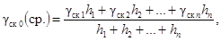
где gск 1 ... gск n - требуемые плотности грунтов (материалов) в отдельных слоях, г/см3;
h1 ... hn - толщины слоев, см.
В случае систематических отклонений плотности грунта, достигаемой при уплотнении в насыпи, от требуемой на 0,06 г/см3 или более (как в сторону уменьшения, так и в сторону увеличения) следует уточнить требуемую плотность, проведя стандартное уплотнение грунта, взятого из насыпи в месте отбора проб.
3.3. Требуемые плотности при возведении земляного полотна из грунтов с содержанием частиц крупнее 5 мм более 30 % (гравелистых, щебенистых и т.п.), а также при возведении земляного полотна из слабых каменных материалов (известняки, мергели, сланцы, отходы горнодобывающей промышленности и т.п.) устанавливают пробным уплотнением машинами тяжелого типа. Получаемую в этом случае максимальную плотность грунта или каменного материала при наиболее эффективном режиме работы уплотняющих машин (см. п. 4.15) принимают за требуемую.
Таблица 1
Значение минимального требуемого коэффициента уплотнения
|
Часть земляного полотна |
Глубина расположения слоя от поверхности покрытия, м |
Усовершенствованные покрытия капитального типа |
Покрытия усовершенствованные, облегченные и переходного типа |
|||
|
Дорожно-климатические зоны |
||||||
|
II - III |
IV - V |
II - III |
IV - V |
|||
|
Насыпи |
Верхняя |
До 1,5 |
1-0,98 |
0,98 - 0,95 |
0,98 - 0,95 |
0,95 |
|
Нижняя неподтапливаемая |
1,5 - 6 |
0,95 |
0,95 |
0,95 |
0,95 - 0,9 |
|
|
Более 6 |
0,98 |
|||||
|
Нижняя подтапливаемая |
1,5 - 6 |
0,98 - 0,95 |
0,95 |
0,95 |
0,95 |
|
|
Более 6 |
0,98 |
0,98 |
||||
|
Выемки, нулевые места и естественные основания под низкие насыпи |
В зоне промерзания |
До 1,2* |
1 - 0,98 |
0,98 - 0,95 |
0,98 - 0,95 |
0,95 |
|
Ниже зоны промерзания |
До 1,2* |
0,95 |
0,95 - 0,92 |
0,95 - 0,92 |
0,9 |
|
* В IV - V зонах принимается равной 0,8 м.
Примечания. 1. Большие значения коэффициента уплотнения принимаются при цементобетонных и цементогрунтовых покрытиях и основаниях, а также при усовершенствованных облегченных покрытиях.
2. В IV - V дорожно-климатических зонах может оказаться целесообразным более значительное уплотнение верхних слоев земляного полотна с тем, чтобы использовать их как нижние конструктивные слои дорожного покрытия.
Кроме того, если окажется возможным, необходимо установить плотности устойчивых насыпей, возведенных из аналогичных материалов и находящихся в эксплуатации не менее трех лет. Для этого обследуют не менее двух-трех насыпей и определяют объемные веса скелета грунта на глубине не менее 1,0 - 1,5 м от поверхности земляного полотна в шурфах у кромки проезжей части. Полученные значения объемных весов скелета грунта принимают за требуемую плотность при возведении насыпей из подобных же материалов. Плотность грунтов, полученная при пробной укатке, не должна быть меньше установленной при обследовании существующих насыпей.
При устройстве насыпей из каменных материалов 1 - 4 класса требования к их плотности не устанавливают, однако должны соблюдаться общие правила возведения насыпей (послойная их отсыпка и уплотнение машинами трамбующего или вибрационного действия).
3.4. Рекомендуется уплотнять связные грунты (суглинистые и глинистые) при оптимальной влажности или при влажности в пределах 0,9 - 1,1W0, когда эффект уплотнения наилучший.
Малосвязные и несвязные грунты (супеси и пески) эффективно уплотнять при влажности в пределах 0,8 - 1,2W0. При одноразмерных песках минимальное значение влажности составляет 6 - 8 %, так как в противном случае уплотнение песков окажется весьма затруднительным.
4. ОРГАНИЗАЦИЯ И ПРОВЕДЕНИЕ ТЕКУЩЕГО КОНТРОЛЯ ЗА УПЛОТНЕНИЕМ ЗЕМЛЯНОГО ПОЛОТНА
4.1. Текущий контроль за уплотнением земляного полотна (табл. 2) осуществляют полевые лаборатории при дорожно-строительных подразделениях, а также контрольные посты при машинно-дорожных отрядах, работающие под общим руководством центральной лаборатории треста или управления.
Полевые лаборатории обслуживают в среднем 3 - 6 объектов, на которых выполняется в смену до 8 - 10 тыс. м3 земляных работ.
Контрольные посты создаются при каждом машинно-дорожном отряде (экскаваторном, скреперном и т.п.), выполняющем в смену до 2 - 3 тыс. м3 земляных работ.
4.2. Контрольные посты ежедневно следят за отсыпкой грунта и работой уплотняющих машин, а также с помощью имеющегося оборудования (приложение 3) отбирают пробы грунта для определения плотности прибором Ковалева. Полученные значения плотностей сопоставляют с требуемыми.
При контроле за качеством уплотнения грунтов с включениями гравелистых частиц, а также в зимних условиях, когда применение прибора Ковалева невозможно, определение плотности грунта осуществляют методом лунок или методом парафинирования (см. приложение 1) с отбором образцов мерзлого грунта.
Таблица 2
Перечень основных работ, выполняемых при текущем контроле за уплотнением земляного полотна
|
Выполняемые работы |
Техническая документация (приложение 2) |
|
|
Контрольный пост |
Послойно определяет плотность грунтов насыпей в процессе их возведения Проводит наблюдения: за послойной отсыпкой грунта по всей ширине насыпи, оптимальной толщиной уплотняемого слоя, числом проходов (ударов) грунтоуплотняющей машины по одному месту, влажностью грунта при его уплотнении |
Форма 3 |
|
Полевая лаборатория |
Дополнительно обследует резервы (совместно с центральной лабораторией) |
Форма 1 |
|
Устанавливает рациональный режим работы уплотняющих машин - пробное уплотнение (совместно с центральной лабораторией) |
Форма 2 |
|
|
Контролирует определение плотности грунта в земляном полотне (совместно с центральной лабораторией) |
Форма 3 |
|
|
Определяет коэффициент относительного уплотнения |
Форма 4 |
|
|
Определяет физико-механические свойства грунтов резервов, в том числе коэффициент неоднородности песка (факультативно) совместно с центральной лабораторией |
Форма 1 |
|
|
Центральная лаборатория |
Определяет оптимальную влажность и максимальную плотность характерных грунтов в резервах (карьерах); устанавливает рациональный режим работы уплотняющих машин и контролирует определение плотности грунта в земляном полотне (совместно с полевой лабораторией); осуществляет методическое руководство и контроль за деятельностью подведомственных лабораторий и контрольных постов, инструктирует работников лабораторий; содействует обеспечению полевых лабораторий необходимым оборудованием и следит за исправностью контрольных и измерительных приборов |
В зимних условиях, ввиду разуплотнения грунта при его замерзании, коэффициент уплотнения K, который определяется на основе испытания образцов мерзлого грунта, отбираемых из уплотненных слоев насыпи, принимают равным:
K = Kфакт + b, (4)
где Kфакт - фактический коэффициент уплотнения, установленный на образцах мерзлого грунта;
b - величина поправки, равная для связных грунтов 0,03 - 0,04, для несвязных - 0,01 - 0,02.
4.3. Влажность грунта каждого слоя, подготовленного для уплотнения, измеряют один раз в смену.
Количество образцов для определения плотности грунта назначают в зависимости от ширины уплотняемого слоя b высоты насыпи. В слоях, имеющих ширину менее 20 м, берут три образца с каждого поперечника (один - по оси проезжей части и два - на обочинах на расстоянии 1,5 - 2 м от откоса); в слоях с шириной, превышающей 20 м, берут не менее пяти образцов с поперечника (по оси насыпи, в 2 м от откосов и между этими точками). Поперечники располагают через 200 м при невысоких насыпях (до 2 - 3 м); при высоте насыпи более 3 м поперечники располагают через 50 м.
Кроме того, отбирают пробы грунта из каждого уплотненного слоя над трубами, в конусах и в местах сопряжений с мостовыми сооружениями.
Количество проб из грунтов высокой связности (тяжелые суглинки и глины), а также отбираемых методом лунок или в мерзлом состоянии может быть уменьшено в два раза.
4.4. Пробу грунта берут из середины уплотненного слоя при его толщине до 30 см; при большей толщине уплотненного слоя отбирают две пробы по высоте слоя.
Пробы рекомендуется отбирать во всех слоях по одной вертикали.
Качество уплотнения определяют сравнением полученных значений объемного веса скелета грунта gск со значениями требуемой плотности gск 0. При этом дастся оценка:
отлично, если у 90 % испытанных образцов коэффициенты уплотнения грунта земляного полотна не ниже требуемых (табл. 1), а у 10 % образцов отклонение в сторону понижения не превышает 0,02;
хорошо, если у 90 % испытанных образцов коэффициенты уплотнения грунта всех слоев земляного полотна не ниже требуемых (табл. 1), у 5 % образцов отклонение в сторону понижения не превышает 0,02, а у 5 % образцов отклонение не превышает 0,04;
удовлетворительно, если у 90 % испытанных образцов коэффициенты уплотнения грунта всех слоев земляного полотна не ниже требуемых, а у 10 % образцов отклонение в сторону понижения не превышает 0,04.
При возведении насыпей из каменных материалов 1 - 4 класса качество их уплотнения проверяют пробными проходами тяжелого моторного катка (10 - 12 т). Деформация поверхности насыпи (осадка под вальцами катка) при пробных проходах не должна превышать 5 мм.
4.5. Грунт отсыпают на нижележащий слой только после достаточного его уплотнения.
4.6. Полевая лаборатория проводит работы, связанные с дополнительным обследованием грунтов резервов и уточнением расчетных параметров при уплотнении грунта, установлением рационального режима работы имеющихся грунтоуплотняющих машин; совместно с Центральной лабораторией систематически осуществляет контроль за качеством уплотнения насыпей в процессе возведения земляного полотна. Кроме того, начальник полевой лаборатории обязан периодически проверять работу контрольных постов.
4.7. Дополнительное обследование резервов, намеченных к разработке, проводят перед началом основных земляных работ, а если установлено несоответствие грунтовых условий проектным данным, то и в процессе земляных работ.
При дополнительном обследовании резервов уточняют значения оптимальной влажности и требуемой плотности грунта и материалов, укладываемых в насыпь.
Одновременно отбирают пробы образцов без нарушения их естественного состояния для определения объемного веса грунта или каменных материалов резерва, необходимого для установления фактического объема земляных работ (см. пп. 4.24, 4.25).
4.8. Для уплотнения грунтов земляного полотна применяют следующие машины: кулачковые катки; решетчатые катки; прицепные, полуприцепные и самоходные пневмошинные катки; вибрационные, вибротрамбующие, трамбующие машины.
4.9. Основными технологическими показателями работы грунтоуплотняющих машин являются: уплотняющая способность (оптимальная толщина уплотняемого слоя грунта), возможность уплотнения грунтов различного состава и состояния, возможность работы как в летних, так и в зимних условиях и при стесненном фронте работ. Технологические особенности грунтоуплотняющих машин учитывают при составлении проекта организации работ и в процессе производства земляных работ.
4.10. Кулачковые катки целесообразно применять при уплотнении связных, комковатых грунтов и грунтов типа тяжелых суглинков и глин при влажности не более оптимальной.
Решетчатые катки эффективны для уплотнения связных (оптимально влажных), комковатых «сухих» грунтов, грунтов с включениями щебня, мелких валунов (до 30 - 35 см), гравийно-песчаных смесей, при работах в зимних условиях для уплотнения смеси талого грунта с мерзлыми комьями (размером до 35 - 40 см).
Пневмошинные катки наиболее эффективны для уплотнения супесей, суглинков и глин при влажности их, близкой к оптимальной.
Вибрационные и вибротрамбующие машины целесообразно применять для уплотнения песков, супесей, гравийно-песчаных и щебеночно-песчаных смесей, гравия и щебня.
Трамбующие машины эффективны для уплотнения грунта во всех условиях возведения земляного полотна при влажности грунта, близкой к оптимальному значению.
При ограниченном фронте работ, наиболее целесообразны грунтоуплотняющие средства типа самоходных пневмошинных катков, вибрационных, вибротрамбующих и трамбующих машин и легкие трамбовки.
Использование грунтоуплотняющих машин в других условиях, кроме указанных выше, возможно (что должно устанавливаться пробным уплотнением), однако пониженная производительность и меньшая уплотняющая способность ведут к повышению стоимости работ по уплотнению грунта.
4.11. Уплотнение грунта проходами пневмоколесных землеройно-транспортных и транспортных машин в обычных условиях рассматривается как предварительное. Отдельные машины при определенных условиях могут использоваться для уплотнения грунта. Необходимое уплотнение грунта гусеничными машинами не достигается, поэтому их нельзя использовать в качестве уплотняющих средств.
4.12. Грунт уплотняют сразу же после отсыпки слоя. Количество грунтоуплотняющих машин и их производительность должны соответствовать производительности землеройного отряда. Пересыхание и особенно переувлажнение или замерзание отсыпанного грунта затрудняет процесс уплотнения, а зачастую делает его практически невозможным.
4.13. Эффективная работа уплотняющих машин во многом зависит от правильного назначения толщины слоя отсыпаемого грунта и числа проходов (ударов) машин по одному следу.
Толщина уплотняемых слоев грунтов и других материалов должна быть оптимальной. Назначается она, как и число проходов (ударов) уплотняющих машин по одному месту, в зависимости от типа машины и вида грунта (табл. 3).
Таблица 3
Ориентировочные значения оптимальной толщины уплотняемого слоя и числа проходов уплотняющих машин
|
Оптимальная толщина слоя в плотном теле, см |
Необходимое число проходов (ударов) |
|||
|
Связный грунт |
Несвязный грунт и каменный материал |
Связный грунт |
Несвязный грунт и каменный материал |
|
|
Кулачковый каток 9 т (типа Д-614) |
20 - 25 |
- |
6 - 8 |
- |
|
15 - 20 |
8 - 12 |
|||
|
Моторный каток 8 - 13 т (типа Д-211В, Д-399А, Д-549) |
- |
30 - 35 |
- |
4 - 6 |
|
20 - 30 |
6 - 8 |
|||
|
Каток на пневмошинах 12 - 15 т (типа Д-625, Д-692) |
15 - 20 |
20 - 25 |
6 - 8 |
4 - 6 |
|
10 - 15 |
15 - 20 |
8 - 12 |
6 - 8 |
|
|
Каток на пневмошинах 25 - 30 т (типа ДСК-1, Д-263, Д-703, Д-551А) |
30 - 35 |
35 - 40 |
6 - 8 |
4 - 6 |
|
20 - 25 |
25 - 30 |
8 - 10 |
6 - 8 |
|
|
Каток на пневмошинах 40 - 50 т (типа Д-326, Д-599) |
35 - 40 |
45 - 50 |
6 - 8 |
4 - 6 |
|
25 - 30 |
35 - 45 |
8 - 10 |
6 - 8 |
|
|
Каток на пневмошинах 100 т |
60 - 80 |
90 - 100 |
6 - 10 |
4 - 8 |
|
Решетчатый каток 25 - 30 т (типа ЗУР-25) |
35 - 40 |
40 - 50 |
6 - 8 |
3 - 5 |
|
25 - 30 |
35 - 40 |
8 - 10 |
5 - 6 |
|
|
Самоходный каток на пневмошинах 16 - 18 m (типа Д-627) |
25 - 30 |
30 - 35 |
6 - 8 |
4 - 6 |
|
15 - 20 |
20 - 30 |
8 - 10 |
6 - 8 |
|
|
Самоходный каток на пневмошинах 30 - 35 m (типа Д-624) |
40 - 45 |
40 - 60 |
6 - 8 |
4 - 6 |
|
Трамбующая машина (типа УМТС-2, Д-471Б) |
40 - 50 |
50 - 60 |
1 |
1 |
|
30 - 40 |
40 - 50 |
|||
|
Трамбующая плита весом, 2 т (площадью 0,9 - 1,2 м2) при высоте падения 2 м |
80 - 90 |
100 - 110 |
4 - 6 |
2 - 4 |
|
70 - 80 |
80 - 90 |
6 - 8 |
4 - 6 |
|
|
Вибрационный каток 3 т (типа Д-480) |
- |
30 - 40 |
- |
3 - 4 |
|
20 - 30 |
||||
|
Вибрационный каток 6 т (типа Д-603) |
- |
40 - 60 |
- |
3 - 4 |
|
Вибротрамбующий каток 6 т (типа ПВК-25) |
15 - 20 |
60 - 80 |
8 - 10 |
4 - 5 |
|
40 - 45 |
5 - 6 |
|||
Примечание. Даны оптимальные толщины слоев и число проходов машин, необходимых для уплотнения грунта: в числителе - до плотности не менее 0,95gск max; в знаменателе - до плотности 1 - 0,98gск max.
4.14. Уточняют способность машин уплотнять отсыпаемые в насыпь грунты и устанавливают рациональный режим работы машин пробным уплотнением.
4.15. Для проведения пробного уплотнения грунта отсыпают опытную площадку со слоем грунта, толщина которого в 1,5 - 2 раза больше, указанной в табл. 3 для испытываемой машины. Размеры крупных включений не должны быть больше половины толщины уплотняемого слоя. Грунт на опытной площадке до начала уплотнения должен быть в рыхлом состоянии. После проходов грунтоуплотняющей машины по одному следу с рекомендованным числом проходов (табл. 3) определяют плотность (объемный вес скелета) грунта по высоте уплотненного слоя и за оптимальную толщину принимают слой, в котором плотность грунта не ниже требуемой.
4.16. Уплотнение грунта должно проводиться при оптимальной или близкой к ней влажности (см. п. 3.4). При понижении естественной влажности грунта более указанных пределов следует или уменьшить толщину уплотняемого слоя, или уплотнять грунт машинами тяжелого типа, а также проводить искусственное доувлажнение грунта до оптимальной влажности.
Использовать переувлажненные грунты в насыпи не допускается ввиду невозможности их уплотнения до требуемой плотности.
4.17. При уплотнении связных грунтов и каменных материалов необходимо применять катки на пневмошинах с давлением воздуха в шинах не менее 5 - 6 ати, при уплотнении несвязных грунтов можно применять катки, общий вес которых меньше на 40 %, а давление воздуха в шинах - в пределах 2 - 3 ати.
Для уплотнения связных грунтов целесообразно попользовать комплекты уплотняющих машин, состоящих из кулачкового или решетчатого катка для начальной стадии уплотнения и катка на пневмошинах - для окончательного уплотнения. Общее число проходов по одному следу обеих машин принимается согласно табл. 3.
4.18. Контрольное определение плотности земляного полотна на глубину не менее 0,8 - 1 м необходимо провести перед началом устройства дорожной одежды, если основание и дорожная одежда устраиваются с некоторым интервалом, в течение которого верхняя часть земляного полотна могла разуплотниться (зимний период, подтопление насыпи, возведенной из «сухих» грунтов), или же при отсутствии достаточно достоверных данных текущего контроля.
4.19. Контрольное шурфование (или бурение) рекомендуется из расчета 1 шурф (выработка) на 1 км по оси дороги при высоте 2 - 3 м.
При насыпях более 3 м, а также на подходах к мостовым сооружениям число контрольных шурфов должно быть не менее двух на 0,2 км. При этом один шурф закладывают на оси земляного полотна и один - на его обочине. Рекомендуется также закладывать шурфы в земляном полотне над искусственными сооружениями.
Пробы для определения плотности берутся через каждые 20 - 30 см по глубине шурфа. Рационально применять при контрольном определении плотности буровые установки.
4.20. Образцы грунта взвешивают на месте, работ или в лаборатории. В последнем случае грунт из кольца перекладывают в мешочки из плотной ткани и все дальнейшие определения необходимых физико-механических свойств производят в лаборатории.
4.21. Заключение о качестве работ по уплотнению грунта дают путем сравнения полученных величин объемного веса скелета грунта с требуемой плотностью.
4.22. Коэффициент относительного уплотнения грунта K1 вычисляют для определения фактического объема земляных работ:
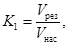
где Vрез - объем грунта (материала), взятого из резерва или выемки;
Vнас - объем того же грунта в насыпи;
или
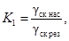
где gск нас - объемный вес скелета грунта (материала) в насыпи;
gск рез - естественный объемный вес скелета в резерве или выемке.
Для насыпей, уплотненных в соответствии с требованиями настоящей «Инструкции», коэффициент относительного уплотнения K1 для грунтов, как правило, больше, а для каменных материалов меньше единицы.
4.23. Для предварительного определения в резервах или выемках объема грунта, необходимого для возведения насыпей, коэффициент относительного уплотнения принимают по табл. 4.
Таблица 4
Ориентировочные значения коэффициента относительного уплотнения K1
|
Мелкозернистые грунты |
Каменные материалы при объемном весе скелета, г/см3, в естественном залегании |
Шлаки, отвалы перерабатывающей промышленности |
|||||
|
пески, супеси, пылеватые суглинки |
суглинки, глины |
лёссы и лёссовидные грунты, черноземы |
1,9 - 2,2 |
2,2 - 2,4 |
2,4 - 2,7 |
||
|
1 |
1,1 |
1,05 |
1,2 |
0,9 |
0,85 |
0,8 |
1,2 - 1,4 |
|
0,95 |
1,05 |
1 |
1,15 |
||||
|
0,9 |
1 |
0,95 |
1,1 |
||||
4.26. Объемный вес скелета грунта (материала) в земляном полотне устанавливают на основе данных контрольных постов и контрольного определения плотности земляного полотна. Естественная плотность грунтов (материалов) резервов (карьеров) устанавливается полевой лабораторией. Определять естественную плотность рекомендуется в процессе разработки резервов (карьеров) путем отбора проб из стенок забоя или дна резерва по мере его углубления при горизонтальной разработке. Отбирают пробы из расчета одна проба на каждые 1500 - 2000 м3 грунта. При разнородных грунтах (материалах) пробы берут из каждого слоя и определяют при этом его мощность.
4.27. Имея данные о фактической плотности грунта в насыпях, находят средний объемный вес грунта (материала) на определенном участке насыпи.
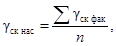
где gск фак - объемный вес скелета грунта (материала) по данным контрольных постов, г/см3;
п - число точек наблюдений в насыпи.
4.28. На основе данных, полученных при обследовании резервов, определяют естественный объемный вес скелета грунта резерва.
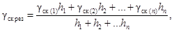
где gск (1) ... gск (n) - объемные веса скелета в пробах по отдельным слоям грунта, г/см3;
h1 ... hn - толщины соответствующих слоев, см.
Подставляя полученные значения gск нас и gск рез, в формулу (6), получим коэффициент относительного уплотнения K1.
4.29. Все ведомости должны быть подписаны главным инженером и начальником лаборатории.
4.30. В приложении 3 приводится примерный перечень оборудования контрольного поста и полевой лаборатории.
Приложение 1
1. ОПРЕДЕЛЕНИЕ ОПТИМАЛЬНОЙ ВЛАЖНОСТИ И МАКСИМАЛЬНОЙ ПЛОТНОСТИ МЕТОДОМ СТАНДАРТНОГО УПЛОТНЕНИЯ
Основной метод определения оптимальной влажности и максимальной стандартной плотности gcк max мелкозернистых (песчаных и глинистых) грунтов, из которых возводят земляное полотно, - метод стандартного уплотнения.
Стандартное уплотнение производят в приборе Союздорнии. Прибор (рис. 1) состоит из подстаканника, разъемного цилиндра диаметром 100 + 0,1 мм и высотой 127 + 0,1 мм, верхнего стакана, стойки с уплотнителем, груза весом 2,5 кг, ограничительного кольца с винтом, зажимного кольца с зажимными винтами. Вес стойки с уплотнителем и ограничительным кольцом составляет 1,3 - 1,4 кг. Указанные размеры прибора должны быть тщательно выдержаны.
Рис. 1. Прибор Союздорнии для стандартного уплотнения:
1 - подстаканник; 2 - разъемный цилиндр; 3 - верхний стакан; 4 - стойка с уплотнителем; 5 - груз; 6 - ограничительное кольцо; 7 - зажимное кольцо; 8 - зажимный винт
Стандартное уплотнение мелкозернистых грунтов, содержащих частицы крупнее 5 мм не более 5 %
Образец грунта весом 3,5 кг в воздушно-сухом состоянии измельчают и просеивают через сито с отверстиями 5 мм; 2,5 - 3 кг грунта, прошедшего через сито, помещают в чашку и тщательно перемешивают.
При уплотнении связных и особенно высокосвязных грунтов, за начальную влажность может быть принята величина, несколько большая, чем влажность грунта в воздушно-сухом состоянии, но не менее чем на 8 - 10 % отличающаяся от оптимальной. Ориентировочно оптимальная влажность следующая: пески - 8 - 13 %; супеси - 9 - 15 %; суглинки - 12 - 22 %; глины - 16 - 26 %.
Количество воды, необходимое для получения требуемой влажности грунта, определяют по формуле, приведенной в разд. 13 приложения 1.
Подготовленный грунт насыпают в прибор примерно на 1/2 высоты и уплотняют ударами груза весом 2,5 кг, падающего с высоты 30 см. Уплотняют грунт в три слоя, при этом число ударов, приходящееся на каждый слой, равно 1/3 от общего числа. При уплотнении третьего (верхнего) слоя на разъемный цилиндр сверху надевают насадный цилиндр.
Общее число ударов груза принимают: для песков и супесей - 75, для пылеватых супесей, суглинков и глин - 120, для жирных глин - 150.
После окончания уплотнения верхний стакан снимают и выступающий грунт осторожно срезают ножом по верхней кромке разъемного цилиндра.
Разъемный цилиндр с подстаканником, зажимным кольцом и уплотненным грунтом взвешивают с точностью до 1 г и определяют объемный вес влажного грунта по формуле:
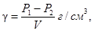
где P1 - вес разъемного цилиндра с подстаканником, зажимным кольцом и грунтом, г;
P2 - вес пустого разъемного цилиндра с подстаканником и зажимным кольцом, г;
V - объем разъемного цилиндра, равный 1000 см3.
После взвешивания из грунта, находящегося в цилиндре, из верхней и нижней его частей, берут по 15 - 20 г в бюксы для определения влажности. Затем грунт из разъемного цилиндра высыпают в чашку. Если грунт удалить из цилиндра затруднительно, то следует отвернуть зажимные винты, зажимное кольцо и подстаканник снять, разъемный цилиндр разобрать на две части и грунт из цилиндра извлечь. Затем в размельченный грунт доливают воду в таком количестве, чтобы увеличить его влажность на 2 - 3 %. Обычно на 3 кг грунта добавляют 50 - 70 см3 воды. Грунт тщательно перемешивают и вновь подвергают уплотнению указанным выше способом, но уже при более высокой влажности. Испытания проводят до тех пор, пока объемный вес влажного грунта не станет уменьшаться при увеличении его влажности. После испытаний и определения влажности по объемному весу сырого грунта находят объемный вес его скелета по формуле
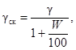
где g - объемный вес влажного грунта, г/см3;
W - влажность грунта, %.
На основании данных, полученных в результате испытаний, вычерчивают кривую зависимости плотности грунта от его влажности (рис. 2).
Рис. 2. Кривая стандартного уплотнения
За оптимальную (Wо) принимают влажность, при которой максимальная плотность, соответствующая наибольшему объемному весу скелета грунта gск max. Эти данные записывают в журнал (форма 1, приложение 2).
Один и тот же образец грунта подвергают стандартному уплотнению не менее двух раз. При этом расхождения в значениях максимальной плотности скелета грунта не должно быть более 0,04 г/см3. При большем расхождении требуется дополнительное стандартное уплотнение.
За расчетное значение максимальной стандартной плотности принимают наибольшее из значений, полученных при двух параллельных испытаниях, имеющих допустимую сходимость.
В связи с тем, что плотность одноразмерного песка (под одноразмерным понимается песок, имеющий коэффициент неоднородности менее 3) мало зависит от влажности, испытания по методу стандартного уплотнения достаточно провести при влажности 10 - 12 %, принимая полученную при этом плотность за максимальную стандартную.
Стандартное уплотнение грунтов, содержащих частицы крупнее 5 мм до 30 %
Максимальную плотность грунтов, содержащих до 30 % частиц каменных пород крупнее 5 мм, определяют методом стандартного уплотнения. Для этого образец грунта в воздушно-сухом состоянии весом не менее 5 кг измельчают и просеивают через сито 5 мм, берут 3 кг грунта, прошедшего через сито, и проводят испытание указанным выше способом.
Для учета влияния на грунт частиц крупнее 5 мм в полученное значение величин максимальной стандартной плотности и оптимальной влажности должны быть введены поправочные коэффициенты. Тогда значения максимальной стандартной плотности g¢ск mах и оптимальной влажности W¢о для грунта с включениями частиц каменных пород крупнее 5 мм могут быть определены по следующим формулам:
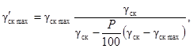
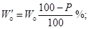
где gск - объемный вес скелета каменных частиц (агрегатов) крупнее 5 мм, г/см3;
gск max - максимальная стандартная плотность для отсеянного грунта менее 5 мм, г/см3;
Wo - оптимальная влажность для отсеянного грунта менее 5 мм, %;
Р - содержание крупных частиц, %.
Объемный вес скелета gск частиц (агрегатов) слабых каменных пород крупнее 5 мм должен быть определен методом парафинирования на образцах материалов ненарушенной структуры, взятых из карьера*.
* Объемный вес частиц, состоящих из прочных кристаллических пород (гранит, базальт и др.), можно определить гидростатическим взвешиванием без предварительного парафинирования или без взвешивания по объему вытесненной жидкости в мерном цилиндре.
Ориентировочные значения объемных весов gск некоторых слабых каменных материалов следующие: известняки - 2 - 2,4 г/см3; песчаники и сланцы - 1,8 - 2,5 г/см3; ракушечники, туфы и др. - 1,2 - 2 г/см3.
Приблизительно значения поправочных коэффициентов в зависимости от процента содержания частиц крупнее 5 мм прочных каменных пород с удельным весом более 2,6 - 2,7 г/см3 могут быть приняты по табл. 5.
Таблица 5
Значения поправочных коэффициентов
|
Поправочные коэффициенты |
||
|
к максимальной стандартной плотности |
к оптимальной влажности |
|
|
5 |
1,02 |
0,95 |
|
10 |
1,04 |
0,9 |
|
15 |
1,06 |
0,85 |
|
20 |
1,08 |
0,8 |
|
25 |
1,1 |
0,75 |
|
30 |
1,13 |
0,7 |
Стандартное уплотнение слабых каменных материалов
Плотность слабых каменных материалов, имеющих прочность ниже 4 класса и легко разрушающихся под действием воды или нагрузки, также определяют методом стандартного уплотнения, который является основным методом оценки их уплотняемости. Для этого по общепринятой методике осуществляют стандартное уплотнение дробленых каменных материалов (менее 5 мм).
2. УСКОРЕННЫЕ МЕТОДЫ ОПРЕДЕЛЕНИЯ МАКСИМАЛЬНОЙ ПЛОТНОСТИ И ОПТИМАЛЬНОЙ ВЛАЖНОСТИ
Основным методом определения максимальной стандартной плотности и оптимальной влажности грунта является метод стандартного уплотнения в большом приборе Союздорнии.
Для ориентировочного определения максимальной плотности и оптимальной влажности разновидностей грунтов, встречающихся при разработке резервов или карьеров (в том случае, когда перед началом работ не было произведено стандартное уплотнение), если их объем не превышает 1000 - 1500 м3 (см. пп. 2.2, 2.3), при текущем контроле за уплотнением грунтов могут применяться ускоренные методы.
Ориентировочно максимальную плотность можно рассчитать по формуле
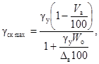
где gy - удельный вес минеральной части, г/см3;
Dв - удельный вес воды, г/см3;
Va - объем содержащегося в грунте воздуха при оптимальной влажности, %;
Wo - оптимальная влажность, %.
Удельный вес минеральных частиц грунта (г/см3) принимают: супесь пылеватая - 2,66, супесь - 2,68, суглинок - 2,69 - 2,71, глина - 2,72 - 2,74.
Удельный вес тяжелых глин и грунтов с большим содержанием солей и органических веществ определяют в лаборатории (удельный вес основных видов грунтов резерва также рекомендуется в каждом отдельном случае определять в лаборатории).
Различные грунты при оптимальной влажности содержат воздух в количестве: супесь - 6 - 8 %, суглинок - 3 - 4 %, глина - 4 - 5 %.
Оптимальная влажность Wo, %, может быть определена по влажности границы текучести
Wo = a × Wт, (6)
или по влажности границы раскатывания:
Wo = Wр - а, (7)
где Wт - влажность границы текучести грунта, определяемая методом балансирного конуса, %;
a - переходный коэффициент;
Wp - влажность границы раскатывания, %;
а - поправка (для суглинистых грунтов а = 1 ¸ 2, для глинистых грунтов а = 2 ¸ 3).
Определив в лаборатории значения Wт или Wp для основных грунтов, по формулам (6) и (7) могут быть найдены ориентировочные значения оптимальной влажности, а по формуле (5) - максимальной плотности. Затем определяют требуемую плотность:
gск 0 = Kgск max.
Различные грунты имеют следующие ориентировочные значения переходного коэффициента a: песок, супесь - 0,75 - 0,7, суглинок - 0,6 - 0,55, глина - 0,5 - 0,45.
Границу текучести непосредственно в полевых условиях определяют ускоренным способом с помощью балансирного конуса и влагомера-плотномера (см. разд. 6 приложения 1).
С помощью балансирного конуса подбирают консистенцию грунта, соответствующую границе текучести. Влажность грунта, соответствующую подобранной таким образом консистенции, определяют или методом высушивания до постоянного веса при 105 °С, или влагомером-плотномером Ковалева.
Пример расчета. Средняя проба глинистого грунта, взятого из резерва, доведена до консистенции границы текучести. Объемный вес влажного грунта g при данной консистенции оказался равным 1,9 г/см3, а объемный вес скелета грунта gск = 1,4 г/см3.
Влажность границы текучести этого грунта
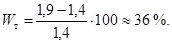
Величина оптимальной влажности:
Wo = aWт = 0,5 × 36 = 18,0 (при a = 0,5);
Максимальная плотность
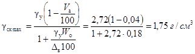
(gу = 2,72; Va = 4; Dв = 1)
Переходный коэффициент a для грунтов данного района устанавливают на основе результатов испытаний основных разновидностей грунтов, отобранных при обследовании резервов. По этим данным строят график зависимости оптимальной влажности и максимальной стандартной плотности, полученных методом стандартного уплотнения, от границы текучести (рис. 3). Тогда, определив границу текучести Wт, по графику (см. рис. 3) находят Wo и gск max. Так, если Wт = 36 %, то Wo = 17 %, а gск max = 1,77 г/см3.
Рис. 3. Номограмма для приближенного определения оптимальной влажности и максимального объемного веса скелета грунта (пример)
Графиком можно пользоваться в процессе контроля за уплотнением грунтов при ориентировочном определении в полевых условиях максимальной стандартной плотности и оптимальной влажности грунтов, встретившихся при разработке резервов, (карьеров), для которых не проводилось стандартное уплотнение.
По графику (см. рис. 3) могут быть получены значения Wo и gск max более достоверные, чем по формулам.
Предварительное определение максимальной плотности и оптимальной влажности при изыскательских работах, для глин и суглинков можно осуществлять в малом приборе Союздорнии (рис. 4).
При текущем контроле малый прибор Союздорнии можно использовать лишь для некоторых видов грунтов (в частности, для одноразмерных песков). Прежде чем его применить, нужно провести специальные исследования по сравнению результатов уплотнения этого грунта в большом и малом приборах. Расхождения результатов не должны превышать допустимых пределов (0,04 г/см3). Малый прибор (рис. 4) состоит из подстаканника с двумя закрепляющими винтами, разъемного цилиндра объемом 100 см3, направляющего насадного цилиндра, плунжера, передающего ударную нагрузку; гири весом 2,5 кг, направляющего стержня и рукоятки. В нижней части разъемного цилиндра помещается металлическая пластинка.
Образец грунта в воздушно-сухом состоянии, просеянного через сито с отверстиями 5 мм, весом 1 кг помещают в чашку, тщательно перемешивают, увлажняют до влажности, на 8 - 10 % меньшей, чем оптимальная*, и вновь перемешивают.
* Ориентировочно оптимальную влажность суглинка принимают 12 - 22 %, глины - 16 - 26 %.
Увлажненный грунт всыпают в цилиндр, вставленный в подстаканник и зажатый винтами, на дне которого помещена металлическая пластинка. Внутренние стенки цилиндра и пластинка должны быть смазаны керосином, чтобы грунт легче отделялся от стенок. После этого на разъемный цилиндр надевают насадный цилиндр и насыпают грунт до верхнего края формы. В форму вставляют плунжер (плоскость его, соприкасающаяся с грунтом, также смазывается керосином) с направляющим стержнем и уплотняют грунт ударами гири, падающей с высоты 30 см. Количество ударов должно быть равно 12 - для суглинков и глин и 15 - для жирных глин.
Рис. 4. Малый прибор Союздорнии для стандартного уплотнения:
1 - рукоятка; 2 - направляющий стержень; 3 - гиря; 4 - плунжер; 5 - направляющий насадный цилиндр; 6 - разъемный цилиндр; 7 - подстаканник; 8 - закрепляющие винты; 9 - металлическая пластинка
После уплотнения грунта плунжер и насадный цилиндр осторожно снимают и тщательно срезают поверхность грунтового образца до уровня краев разъемного цилиндра. Цилиндр разбирают и из него вынимают образец грунта, который взвешивают на технических весах с точностью до 0,1 г.
Рассчитывают объемный вес влажного грунта по формуле
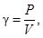
где Р - вес образца, г;
V - объем разъемного цилиндра, см3.
Часть образца помещают в бюксы для определения влажности. Определив влажность, рассчитывают объемный вес скелета по формуле (2) приложения 1.
Увеличивают влажность грунта в чашке на 2 - 3 % и повторяют опыт. Испытания проводят до тех пор, пока объемный вес влажного грунта не станет уменьшаться при увеличении его влажности.
За оптимальную влажность Wo принимают влажность, соответствующую наибольшему объемному весу скелета грунта gск max.
3. ОПРЕДЕЛЕНИЕ ВЛАЖНОСТИ МЕТОДОМ ВЫСУШИВАНИЯ
В заранее высушенный и взвешенный бюкс помещают влажный грунт и взвешивают. Величину навески принимают в зависимости от степени неоднородности грунта, но не менее 10 - 15 г. После взвешивания открытый бюкс помещают в сушильный шкаф, в котором высушивают грунт при температуре 100 - 105 °С до постоянного веса, т.е. до тех пор, пока разница между двумя последующими взвешиваниями будет не более 0,02 г. Первичное высушивание глинистых грунтов длится 5 ч, песчаных - 3 ч. Каждое повторное высушивание глинистых грунтов продолжается 2 ч, песчаных - 1. Перед взвешиванием бюкс с высушенным грунтом охлаждают в эксикаторе с хлористым кальцием. За окончательный результат взвешивания принимают наименьший вес бюкса с сухим грунтом.
Все взвешивания должны быть проведены с точностью до 0,01 г на технических весах.
Величину влажности грунта W с точностью до 0,1 % вычисляют по формуле
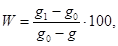
где g1 - вес бюкса с влажным грунтом, г;
g0 - вес бюкса с высушенным грунтом, г;
g - вес пустого бюкса, г.
Для каждого образца проводят не менее двух параллельных определений. Расхождение между параллельными определениями допускается не более 2 %.
За величину влажности образца грунта принимают среднее арифметическое результатов параллельных определений.
4. ОПРЕДЕЛЕНИЕ УДЕЛЬНОГО ВЕСА
Грунты незаселенные
Образец грунта в воздушно-сухом состоянии размельчают в фарфоровой ступке фарфоровым пестиком и просеивают через сито с отверстиями 0,25 мм, остаток на сите переносят в ступку, дробят и снова просеивают через то же сито. Измельченный и просеянный грунт тщательно перемешивают и берут в пикнометр навеску для определения удельного веса (методом «квадратов»); навески принимают: для глин и суглинков 12 - 15 г на 100 см3 емкости пикнометра; для песков и супесей - 15 - 18 г. Пикнометр должен быть заранее высушен и взвешен.
Одновременно из этого же грунта берут навеску для определения количества гигроскопической влаги в грунте.
Взвешивают с точностью до 0,01 г на технических весах.
Взвешенный в пикнометре воздушно-сухой грунт заливают дистиллированной водой примерно на 1/2 емкости пикнометра, взбалтывают и кипятят на песчаной бане, не допуская разбрызгивания: в случае образования обильной пены при закипании температуру песчаной бани снижают; кипячение ведут в течение 1 ч (считая с момента закипания) - для суглинков и глин, в течение 30 мин - для песков и супесей. После кипячения пикнометр доливают дистиллированной водой до мерной черты, помещают в ванну с водой и охлаждают до 20 °С (или до комнатной температуры); при установившейся температуре воды в ванне пикнометры выдерживают не менее 1 ч. Температура воды, которая измеряется термометром с точностью до 0,5 °С, должна быть постоянной.
После охлаждения в пикнометр по каплям (пипеткой) добавляют дистиллированную воду (имеющую такую же температуру, как и суспензия в пикнометре) до мерной черты (нижний мениск воды должен находиться на уровне мерной черты).
Пикнометр снаружи вытирают сухим полотенцем, внутри, до мерной черты, - фильтровальной бумагой и взвешивают, после чего суспензию из пикнометра выливают, тщательно его ополаскивают, наливают дистиллированную воду и выдерживают в ванне с водой при той же температуре, при которой выдерживался пикнометр с суспензией. Затем по каплям добавляют воду до мерной черты (устанавливая нижний мениск над чертой). Пикнометр вытирают и взвешивают.
Величину удельного веса грунта вычисляют по формуле (с точностью до 0,01 г/см3):
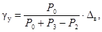
где Р0 - вес абсолютно сухого грунта, г;
Р2 - вес пикнометра с водой и грунтом, г;
P3 - вес пикнометра с водой, г;
Dв - удельный вес воды, г/см3 (обычно принимаемый равным 1).
Вес абсолютно сухой навески Р0 вычисляют по формуле
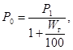
где P1 - вес грунта в пикнометре в воздушно-сухом состоянии, г;
Wг - количество гигроскопической влаги, %.
Для каждого образца грунта проводят два параллельных определения удельного веса. Расхождение результатов допускается не более 0,02 г/см3. За удельный вес образца грунта принимают среднее арифметическое результатов параллельных определений.
Грунты засоленные
Измельченный и просеянный грунт тщательно перемешивают и берут в бюкс навеску (величина навески указывалась ранее). Грунт в бюксе высушивают до постоянного веса в сушильном шкафу при температуре 100 - 105 °С. Сухую навеску переносят в высушенный и взвешенный пикнометр. Пикнометр с грунтом взвешивают.
Наливают в пикнометр с грунтом керосин (примерно до половины) и взбалтывают. Вместо кипячения применяют вакуумирование: степень разрежения при вакуумировании определяется началом выделения пузырьков воздуха; вакуумирование продолжают до прекращения выделения пузырьков, но не менее 1 ч. Вакуумирование можно заменить взбалтыванием также в течение 1 ч.
Удельный вес керосина должен быть заранее определен с помощью ареометра.
После вакуумирования или взбалтывания пикнометры доливают керосином и выдерживают в ванне с водой при постоянной температуре в течение 1 ч. Затем керосин добавляют до мерной черты, пикнометр вытирают и взвешивают, после чего грунт и керосин из пикнометра выливают, пикнометр ополаскивают керосином, наливают в пикнометр керосин, выдерживают в течение часа при той же температуре, добавляют керосин до мерной черты и взвешивают.
Величину удельного веса грунта gу вычисляют по формуле
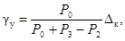
где Р0 - вес грунта в пикнометре, г;
Р2 - вес пикнометра с керосином и грунтом, г;
Р3 - вес пикнометра с керосином, г;
Dк - удельный вес керосина, г/см3.
5. ОПРЕДЕЛЕНИЕ КОЭФФИЦИЕНТА НЕОДНОРОДНОСТИ ПЕСКА
Коэффициент однородности
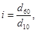
где d60 - диаметр частиц, меньше которого в грунте содержится 60 %;
d10 - диаметр частиц, меньше которого в грунте содержится 10 %.
Величины диаметров d60 и d10 находят по кривым гранулометрического состава, которые строят по данным гранулометрического анализа.
Пример. В результате гранулометрического анализа получен следующий состав песка: содержание фракций 0,5 ¸ 0,25 мм - 2 %; 0,25 ¸ 0,10 мм - 88 %; 0,10 ¸ 0,074 мм - 6 % и менее 0,074 мм - 4 %.
По этим данным строим кривую гранулометрического состава в полулогарифмическом масштабе (рис. 5). На кривой находим точку А, соответствующую d10, и точку Б, соответствующую d60.
В данном примере d10 = 0,1 мм; d60 = 0,16 мм.
Рис. 5. Кривая гранулометрического состава песка (пример)
Коэффициент
неоднородности 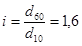
Этот песок является одноразмерным, так как коэффициент неоднородности его меньше 3.
6. ОПРЕДЕЛЕНИЕ ВЛАЖНОСТИ И ПЛОТНОСТИ ВЛАГОМЕРОМ-ПЛОТНОМЕРОМ КОВАЛЕВА
Прибор основан на принципе гидростатического взвешивания (рис. 6). Основные части прибора - поплавок и сосуд; вспомогательные - режущий стальной цилиндр (внутренний объем которого равен 200 см3, вес 123 г) с крышкой, стальная насадка, предназначенная для погружения режущего цилиндра в грунт, стальной нож и ведро-футляр с крышкой, закрывающейся двумя замками.
Поплавок предназначен для взвешивания испытуемой пробы грунта как без доступа воды, так и в водной среде. Режущий цилиндр с пробой грунта и надетой на него плоской крышкой помещается в крышку поплавка. При этом цилиндр устанавливают так, чтобы режущий край его был сверху, а незаточенный край с надетой на него крышкой - снизу.
Сверху на цилиндр надевается поплавок так, чтобы его край вошел в паз крышки поплавка, где имеется резиновая прокладка. Замки на поплавке и крючки на крышке совмещаются и герметически закрывают поплавок. Для удлинения срока службы резиновой прокладки при хранении прибора лучше поплавок и крышку держать отдельно.
Между дном крышки поплавка и крышкой цилиндра помещается тарировочный груз, представляющий собой металлические пластинки разной величины.
На трубке поплавка нанесены четыре шкалы показателей объемного веса грунтов. Шкала «ВЛ» служит для определения объемного веса влажных грунтов в диапазоне от 1,2 до 2,2. Шкалы «Ч», «П», и «Г» служат для определения объемного веса скелета (плотности) черноземных, песчаных и глинистых грунтов в диапазонах от 1 до 2,2. Каждое деление шкалы соответствует 0,01 г/см3.
Сосуд служит для размешивания пробы грунта в воде и взвешивания ее в воде при определении объемного веса скелета грунта.
Поплавок и сосуд соединяются между собой тремя крючками, припаянными к поплавку, и тремя штырьками, припаянными к сосуду.
Между соединенными поплавком и сосудом имеется зазор шириной 1 - 2 мм, через который при погружении в воду из сосуда свободно выходит воздух и поступает вода. С целью центровки и придания прибору устойчивого положения при упаковке и переноске его, на дне футляра уложено резиновое кольцо, а на крышке имеется углубление.
Проверка прибора
Перед началом работы прибор должен быть проверен. Проверяют:
1) вес режущего цилиндра, который должен быть равен 123 г ± 1;
2) вес сосуда - 272 г ± 1 (в воде 240 г);
3) герметичность поплавка;
4) поплавок (с присоединенным к нему сосудом и вложенным внутрь его режущим цилиндром, без грунта), который должен погружаться до начала шкалы «ВЛ» (1,2) и шкалы «Ч» (1), нанесенных на трубке. Если это условие соблюдается, то прибор пригоден для испытания. Незначительные отклонения уровня воды от этой черты регулируются снятием (если уровень воды выше черты) или добавлением (если уровень воды ниже черты) тарировочного груза, находящегося в крышке поплавка.
Рис. 6. Плотномер-влагомер Ковалева:
1 - крышка футляра; 2 - ведро-футляр; 3 - стальная насадка; 4 - нож; 5 - поплавок; 6 - резиновое кольцо; 7 - сосуд; 8 - трубка поплавка; 9 - крышка поплавка; 10 - замок поплавка; 11 - режущий цилиндр; 12 - тарировочный груз; 13 - замок футляра; 14 - крючки
Рис. 7. Схема отбора проб грунта режущим цилиндром (прибор Ковалева):
1 - режущий цилиндр; 2 - насадка
После проверки прибора производят контрольное определение объемного веса влажного грунта и влажности весовым методом. Проверку прибора и контрольное определение объемного веса и влажности весовым методом рекомендуется проводить не реже 1 - 2 раз в месяц. Особое внимание следует обращать на состояние резиновой прокладки в крышке поплавка.
Определение объемного веса влажных грунтов
Для отбора пробы грунта с ненарушенной структурой на поверхности грунта выравнивается площадка и на нее острым краем ставится режущий цилиндр. С помощью насадки цилиндр вдавливается в грунт вручную или молотком. Верхний край режущего цилиндра должен быть погружен на 3 - 4 мм ниже поверхности грунта. Чтобы грунт при этом не уплотнялся, в насадке предусмотрено свободное пространство над цилиндром (рис. 7). За глубиной погружения режущего цилиндра в грунт наблюдают через отверстия в насадке.
Цилиндр с грунтом откапывают ножом и излишний грунт срезают по краям цилиндра. Наружную поверхность цилиндра очищают от грунта и цилиндр с грунтом и надетой на него крышкой помещают в крышку поплавка. На крышку сверху надевают поплавок и закрывают замки, после чего поплавок опускают в воду, налитую в ведро-футляр. Против уровня воды по шкале «ВЛ» берется отсчет объемного веса влажного грунта g.
Примечание. Если необходимо определить объемный вес рыхлого или текучего грунта, который не удерживается в поднятом режущем цилиндре, то при отборе пробы используется крышка поплавка. После того, как режущий цилиндр погружен в грунт, верхнюю половину его снаружи освобождают от грунта. Избыток грунта срезают по верхнему краю цилиндра ножом и на цилиндр надевают крышку с плоским дном. Затем под режущий цилиндр с грунтом подводят нож, и цилиндр вместе с грунтом опрокидывают так, чтобы крышка оказалась внизу. В дальнейшем отобранную пробу выравнивают ножом по острому краю цилиндра, цилиндр и крышку очищают с наружной поверхности от грунта. Дальнейшее определение объемного веса влажного грунта выполняется описанным выше способом.
Определение объемного веса скелета грунта (плотности)
После определения объемного веса влажного грунта пробу переносят из режущего цилиндра в сосуд и заливают водой приблизительно на 1/2 емкости сосуда: грунт тщательно размешивают.
После того, как в воде не останется комков грунта; в сосуд доливают воду до 1/2 - 1/3 его объема. К сосуду присоединяют поплавок и сосуд с поплавком погружают в воду. Вода через зазор между поплавком и сосудом заполняет оставшееся пространство сосуда. По шкале «Ч», «П», или «Г», соответственно типу испытываемого грунта, отсчитывается объемный вес скелета грунта (плотности) gск.
Если удельный вес грунтов более 2,72, можно gск находить по шкале «Г» и полученный результат пересчитывать по формуле
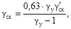
где g¢ск - объемный вес скелета, найденный по шкале прибора, г/см3;
gу - удельный вес грунта.
Полученное значение gск будет истинным.
Определение влажности грунта
По найденному объемному весу влажного грунта g и объемному весу скелета gск влажность W рассчитывается по формуле
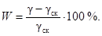
7. ОПРЕДЕЛЕНИЕ ГРАНИЦЫ ТЕКУЧЕСТИ ГРУНТА БАЛАНСИРНЫМ КОНУСОМ
1. Границу текучести грунта определяют с помощью «балансирного конуса» (ГОСТ 5184-64), основная часть которого полированный конус из нержавеющей стали и балансирное устройство, состоящее из двух шариков с коромыслом (рис. 8). Общий вес прибора - 76 г.
Под границей текучести понимают влажность грунтового теста, при которой конус прибора под действием собственного веса погружается за 5 сек на 10 мм (до круговой метки).
2. Пробу воздушно-сухого грунта весом около 500 г, пропущенного через сито с отверстиями 1 мм, замешивают с водой до получения густого теста и до испытания конусом выдерживают в закрытом сосуде не менее 20 - 30 мин (для тяжелых суглинков и глин время выдерживания следует увеличить до 2 ч).
Рис. 8. Балансирный конус для определения границы текучести (по ГОСТ 5184-64):
1 - подставка; 2 - круговая метка; 3 - ручка; 4 - конус с углом 30°; 5 - грунтовое тесто; 6 - балансирный шар
3. Подготовленным грунтом с помощью шпателя заполняют стаканчик и сглаживают поверхность грунта наравне с краями стаканчика.
4. К поверхности грунта подносят и опускают острие конуса, слегка смазав его вазелином или жиром.
Если конус погрузится на 10 мм в течение 5 сек, то значит достигнута искомая граница текучести.
5. Влажность грунта меньше границы текучести, если конус погрузится менее чем на 10 мм. В этом случае к пробе грунта добавляют немного воды, грунт тщательно перемешивают и испытания повторяют.
Если конус погрузится более чем на 10 мм, то влажность грунта больше границы текучести. В этом случае грунтовое тесто в чашке следует подсушить, перемешивая его шпателем, и все операции повторить.
6. Влажность грунта, соответствующую границе текучести, определяют или высушиванием до постоянного веса при 105 °С или прибором Ковалева. В последнем случае кольцо прибора наполняют грунтом подобранной консистенции вровень с краями. Дальнейший ход работ по определению влажности прибором Ковалева описан ранее (приложение 1, разд. 6).
8. ОПРЕДЕЛЕНИЕ ГРАНИЦЫ РАСКАТЫВАНИЯ
Под границей раскатывания понимают влажность, при которой грунт, раскатанный в жгут диаметром 3 мм, распадается на кусочки длиной 3 - 10 мм.
Грунт подготавливают к испытанию так же, как и для определения границы текучести (ГОСТ 5184-64).
Затем выполняют следующее:
1. Из подготовленного грунтового теста берут небольшой кусочек, раскатывают на стекле до образования жгута диаметром около 3 мм (вместо стекла можно использовать гладкую металлическую пластинку, плотную глянцевую или восковую бумагу).
2. Если жгут не крошится, его переминают и вновь раскатывают до указанного диаметра; если жгут при диаметре 3 мм начинает крошиться по всей длине на кусочки 3 - 10 мм, считают, что граница раскатывания найдена. Кусочки грунта собирают в бюкс и закрывают крышкой. Затем операцию повторяют, пока вес грунта в бюксе не достигнет 10 г, после чего определяют влажность грунта путем высушивания его в бюксе до постоянного веса.
3. Границу раскатывания каждого образца грунта определяют не менее двух раз. При этом расхождение весовой влажности допускается не более 2 %. За величину влажности на границе раскатывания принимают среднее арифметическое из выполненных определений, выраженное в целых процентах.
4. Если из увлажненного грунта невозможно раскатывать жгут диаметром 3 мм, то считают, что данный грунт не имеет границы раскатывания.
Методика определения влажности границы раскатывания ускоренным способом
Ускоренным способом определение границы раскатывания рекомендуется только для несцементированных глинистых грунтов-супесей, суглинков и глин (предварительно проводят пробное определение раскатываемости грунта для выявления его вида: относится он к глинистым или песчаным).
Границу раскатывания этим методом определяют следующим образом:
1. Грунт в воздушно-сухом состоянии размельчают и просеивают сквозь сито с отверстиями 0,5 мм.
2. Примерно 150 г грунта замешивают с водой до тестообразного состояния, как это обычно делают при подготовке грунта к определению границы текучести. Как правило, используют грунт, остающийся после определения границы текучести балансирным конусом.
Примечание. Для ускорения водоотдачи высокосвязные грунты-глины - рекомендуется замешивать на слабосолевом растворе - СаСl2 (0,6 г соли на 1 л воды).
3. На ровную поверхность, покрытую листом бумаги, кладут металлический шаблон - кольцо высотой 2 мм диаметром 50 мм и заполняют его грунтовой массой. Избыток грунта, выступающего из шаблона, срезают ножом заподлицо с краем шаблона. Шаблон снимают, а полученный образец перекладывают на одну половину полоски из полотна (не синтетического) и покрывают сверху другой половиной.
4. Приготовленный образец помещают между двумя пачками фильтровальной бумаги, по 15 - 20 листков каждый (диаметр листка не менее 10 см).
6. Образец устанавливают на гидравлический или рычажный пресс и выдерживают при нагрузке 200 кГ (10 кГ/см2) с точностью до ±20 кГ (±1 кГ/см2).
Примечание. Давление, показываемое манометром гидравлического пресса, соответствующее сжатию P = 10 кГ/см2, вычисляют заранее по формуле:
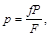
где р - показание манометра, кГ/см2;
Р - требуемое давление, кГ/см2;
f - площадь образца, см2;
F - площадь поршня пресса, см2.
7. Время выдерживания образцов под нагрузкой составляет 10 мин ± 1 мин.
8. Спрессованный образец разламывают и помещают в сушильный стаканчик, взвешивают и сушат до постоянного веса при температуре 100 - 105 °С в сушильном шкафу или иным ускоренным способом.
9. Одновременно можно закладывать несколько образцов (2 - 4), устанавливая их столбиком и разделяя металлическими пластинками (п. 5 данной методики). Параллельное определение границы раскатывания одного и того же образца грунта рекомендуется проводить при повторной закладке. Фильтровальную бумагу можно использовать несколько раз, предварительно высушивая ее после каждого употребления.
Полотно необходимо промывать чистой водой и высушивать.
10. Если значение полученной влажности составит менее 11 - 12 %, следует повторить пробную раскатку образца для выявления его вида, так как подобный грунт, по всей вероятности, является песком или находится на границе с супесью.
9. ОПРЕДЕЛЕНИЕ ОБЪЕМНОГО ВЕСА ГРУНТА МЕТОДОМ РЕЖУЩЕГО КОЛЬЦА
Объемный вес скелета грунта определяют на образце грунта, взятом без нарушения его структуры, с помощью стального кольца объемом около 500 см3 с режущим краем (рис. 9).
Техника отбора проб грунта следующая: на зачищенную поверхность грунта ставят режущим краем вниз слегка смазанное вазелином кольцо, помещенное в специальное приспособление для отбора проб (рис. 10), и забивают его легкими ударами гири по крышке в грунт. После погружения кольцо окапывают со всех сторон и, подрезав ножом монолит снизу, осторожно извлекают на поверхность. Грунт, выступающий с верхней и нижней стороны, срезают ножом заподлицо с краями кольца. Затем кольцо с грунтом взвешивают на весах с точностью до 1 г.
Объемный вес влажного грунта g (г/см2) определяют по формуле
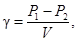
где P1 - вес влажного грунта с кольцом, г;
Р2 - вес пустого кольца, г;
V - объем грунта в кольце, см3.
После взвешивания образца из кольца отбирают пробу для установления влажности, которую определяют высушиванием до постоянного веса.
Затем подсчитывают объемный вес скелета грунта:
где W - весовая влажность грунта, %.
Рис. 9. Кольцо для отбора проб грунта
Рис. 10. Приспособление для отбора проб грунта без нарушения его структуры
При отборе проб из смеси талого и мерзлого грунтов, а также из грунтов с включением гравелистых частиц объем кольца должен быть увеличен до 2 - 3 л.
10. ОПРЕДЕЛЕНИЕ ОБЪЕМНОГО ВЕСА ГРУНТА МЕТОДОМ ПАРАФИНИРОВАНИЯ
Этот метод применяют преимущественно при контроле за уплотнением грунта в зимних условиях. Из уплотненного слоя вырубают монолит грунта объемом не менее 200 - 300 см3, взвешивают его и определяют вес g.
Затем производят парафинирование образца, взвешивают его с парафиновой оболочкой и определяют вес g1.
Взвешенный образец погружают в мерный цилиндр с водой и определяют объем вытесненной воды, равный объему запарафинированного образца грунта V1.
Если запарафинированный образец грунта имеет большой объем и в цилиндр не помещается, то объем его можно определить следующим образом: стеклянную банку или кастрюлю объемом 2 - 3 л наполняют водой до краев и устанавливают в какой-либо сосуд. Затем образец, подвязанный на нитке, погружают в воду. При этом часть воды, равная объему образца будет вытеснена и выльется через края банки в сосуд.
Измерив объем вытесненной воды мерным цилиндром, определяют объем запарафинированного образца V1.
Более точно объем запарафинированного образца можно определить по величине потери веса при погружении образца в воду. Взвешивать образец в воздухе и в воде при этом рекомендуется на обычных технических весах. Вычитая из веса образца в воздухе вес его в воде, получают объем образца с парафином V1.
По разности между весом запарафинированного образца g1 и весом образца g определяют вес парафина g2, затраченного на парафинирование образца:
g2 = g1 - g.
Принимая удельный вес парафина Dп = 0,9 г/см3 и зная вес парафина g2, определяют объем парафина V2, затраченного на парафинирование образца:
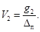
Затем определяют объем образца V, см3 без парафина:
V = V1 - V2
и объемный вес влажного грунта g г/см3:
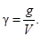
11. ОПРЕДЕЛЕНИЕ ПЛОТНОСТИ ГРУНТА МЕТОДОМ ЛУНОК
При содержании в грунте включений гравелистых частиц, щебенки, мерзлых комьев, а также при возведении насыпей из каменных материалов контроль за уплотнением грунта может осуществляться методом засыпки лунок сухим песком.
Для этого используют отдельные фракции песка 0,5 - 1 мм, 1 - 2 мм. Песок не должен содержать пылеватых и глинистых частиц; если такие частицы имеются, их следует отмыть и песок высушить.
На уплотненном слое грунта выравнивают небольшую площадку и выкапывают лунку глубиной 10 - 15 см и объемом 3 - 5 л (при выкапывании лунки нельзя сминать края и боковые стенки лунки рабочим инструментом: это может привести к увеличению объема лунки и искажению получаемых результатов). При большом количестве крупных включений объем лунки следует увеличить до 10 л. Грунт из лунки тщательно собирают и взвешивают.
Объем лунки определяют следующим образом.
Над лункой устанавливают двойную жестяную воронку с диаметром основания 25 см (рис. 11). В лунку и нижнюю воронку через верхнюю воронку насыпают сухой песок. Объем засыпаемого песка измеряют мерными стеклянными цилиндрами емкостью 0,1 - 1 л с точностью до 5 см3 (основной объем песка может быть засыпан в лунку любым мерным сосудом, остальную часть песка до полного заполнения лунки желательно засыпать небольшими мерными цилиндрами емкостью не более 0,1 - 0,25 л). Песок в цилиндр насыпают через обычную воронку без встряхивания. Вычитая из общего объема песка его объем, находящийся в воронке, получим объем песка в лунке, т.е. объем лунки. Разделив вес грунта, извлеченного из лунки, на его объем, - определяют объемный вес влажного грунта. Для определения влажности грунта необходимо высушить весь образец, взятый из лунки, или, если это невозможно, определить влажность частиц грунта с диаметром менее 5 мм и внести поправку на содержание частиц крупнее 5 мм по формуле (4) (настоящей «Инструкции»).
Рис. 11. Установка воронки над лункой
12. ОПРЕДЕЛЕНИЕ ПЛОТНОСТИ ГРУНТА РАДИОМЕТРИЧЕСКИМИ МЕТОДАМИ
Для измерения плотности грунта используют гамма-излучение радиоактивных изотопов. Приборы, созданные для этой цели, работают или по принципу просвечивания (радиометрические вилки, двухзондовые приборы), или по принципу рассеивания (однозондовые приборы, поверхностные радиоактивные плотномеры). Радиометрические вилки и зонды для определения плотности грунтов при полевом контроле за уплотнением земляного полотна малопригодны, потому что при работе с этими приборами необходимо пробуривать скважины, особенно в плотных связных и мерзлых грунтах, что нарушает плотность и снижает точность показаний приборов. Поэтому целесообразнее применять поверхностные радиоактивные плотномеры.
В Советском Союзе серийно выпускаются поверхностные гамма-плотномеры типа ПГП-1 с источником излучения - цезий-137. К недостаткам этого прибора следует отнести наличие сложного пересчетного устройства типа М-30, которое, как показали исследования, следует заменить радиометром РПП-1 со стрелочным индикатором. Кроме того, поверхностный плотномер позволяет производить измерение на небольшую глубину - до 20 см. Для повышения глубины измерения следует применять изотоп кобальт-60.
Точность измерения плотности ±0,05 г/см3.
При работе с прибором типа ПГП-1 предварительно составляют тарировочную кривую для основных видов грунтов, используемых для возведения насыпей. Для обеспечения достаточной точности измерения в полевых условиях расчищают и тщательно выравнивают площадку размером 0,5´0,3 м2. Устанавливают прибор и замеряют: 1) гамма-излучение в контрольно-калибровочном устройстве (2 - 4 мин); 2) рассеянное гамма-излучение от грунта (2 - 4 мин). По тарировочной кривой определяют значение объемного веса грунта.
Для контроля работы гамма-плотномера одновременно с измерением плотности этим прибором на каждом пятом поперечнике отбирают образцы грунта методом кольца или определяют плотность прибором Ковалева.
Влажность грунта также может быть определена радиоактивным (нейтронным) влагомером типа НИВ-I. Точность измерения влажности составляет 1 - 2 %.
При работе с радиоактивными приборами необходимо строго соблюдать действующие инструкции по технике безопасности.
13. РАСЧЕТ КОЛИЧЕСТВА ВОДЫ, НЕОБХОДИМОЙ ДЛЯ УВЛАЖНЕНИЯ ГРУНТА ДО ОПТИМАЛЬНОЙ ВЛАЖНОСТИ
Количество воды Q, необходимое для увлажнения грунта до оптимальной влажности, определяют по формуле.
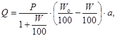
где Р - вес грунта, подлежащего увлажнению, т;
Wo - требуемая влажность, %;
W - естественная влажность грунта, %;
а - коэффициент, учитывающий испаряемость воды в засушливых районах (принимается в пределах до 1,2).
Пример. Требуется определить объем воды, который необходимо разлить на 1 м2 поверхности слоя грунта, подлежащего увлажнению, при следующих условиях: ширина насыпи В = 15 м, длина участка L = 50 м, толщина слоя грунта в плотном теле h = 0,2 м (объемный вес влажного грунта g = 1,8 г/см3, оптимальная влажность грунта Wo = 20 %, естественная влажность W = 13 %. Вес грунта, подлежащего увлажнению, будет:
Р = В × L × h × g = 15 × 50 × 0,2 × 1,8 = 270 т.
Необходимое количество воды
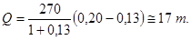
Удельный расход воды
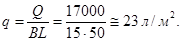
Воду в количестве более 10 л/м2 разливают в несколько приемов с тщательным перемешиванием грунта перед последующим розливом.